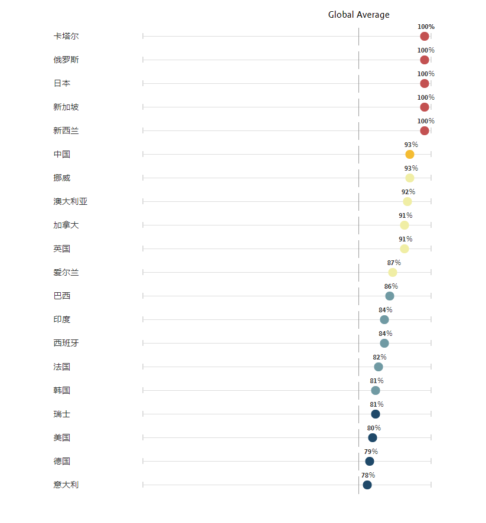
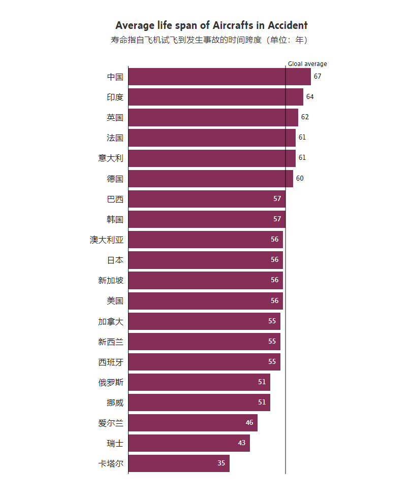
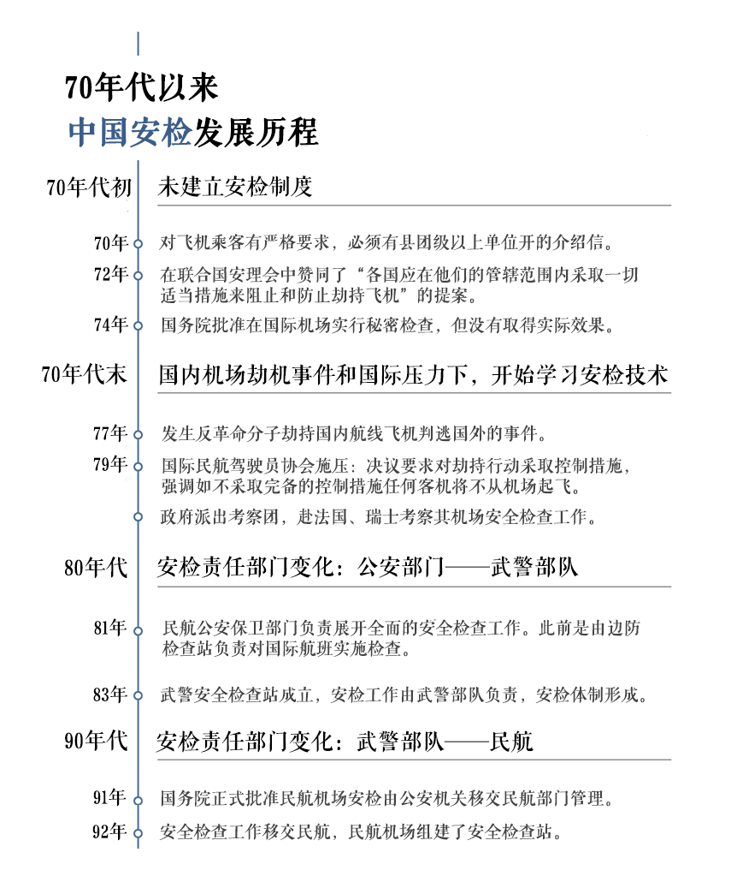
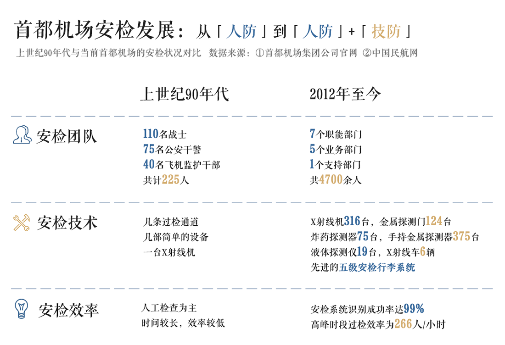
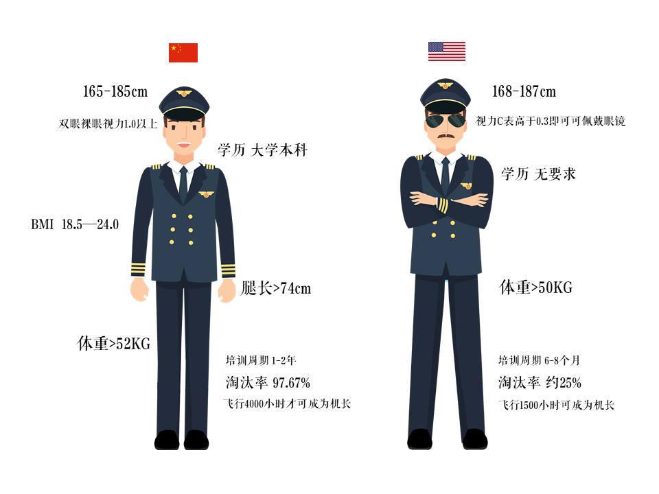
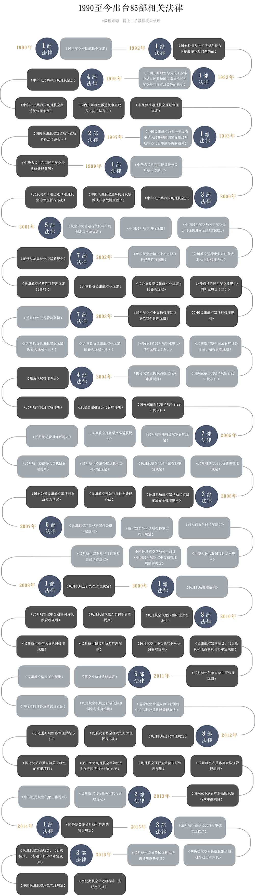
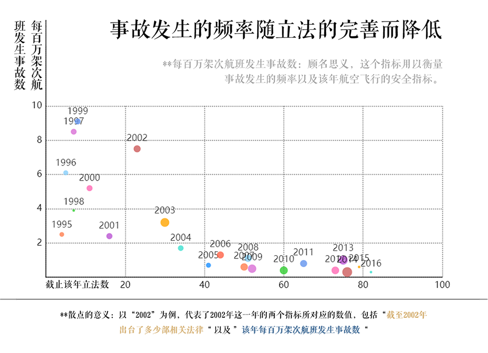

航空事故频发，航空安全让人担忧
据不完全统计，从1月中旬伊朗发生坠机事件至今，在不到5个月时间里，全世界造成伤亡的民航事故已经多达9起，其中最为严重的当属3月10日埃塞俄比亚航空302号班机坠毁事故，该起事故造成机上157人全部罹难。 今年航空事故频发，让本就处在风口浪尖上的航空安全问题的热度只增未减。 航空出行，真的这么不安全吗？
我们从飞行安全网站（Aviation Safety Network)上收集了从1919年到现在发生过的飞行事故记录。除了空难的情况记录，其中也包含了民用、通用、军用航空出现过事故征候但没有造成人员伤亡事故记录。 一百年来，世界范围内发生的航空事故共22314起。 相比每天约有1.1万架飞机在飞行的数据，22314起事故只是很小一部分，但若是掉以轻心，每一次事故都有可能造成严重的后果，每一次事故都不该被忽视。
我国航空安全发展情况
我国作为全球第二大航空吞吐大国，一直以来的航空安全情况究竟如何？ 今年3月份，埃航事件发生尚未超过20小时，我国民航局就率先下达了停飞波音737-8飞机的通知，随后全球多个国家和地区也纷纷下达禁飞令。 政府早于FAA（美国联邦航空管理局）发布停飞波音737-8指令，体现出当前我国对飞行安全的追求已经走在了FAA的前面。 近些年国内航空也几乎没有人员伤亡的报道，似乎也说明了乘坐国内航空公司出行比国际航空更安全。
一、初见端倪——中国航空状况与世界平均水平对比
每百万架次航班发生事故数
中国航空相比于世界航空哪个航空更加安全？ 我们找来了1976年以来，中国航空每百万架次航班发生的事故数（以下简称中国航空事故数）和世界航空每百万架次航班平均发生的事故数（以下简称世界航空事故数），并做了如上的折线图，由上图我们可以看到，1976年以来，无论中国航空的事故数还是世界航空事故数都是有不断下降的趋势的。世界航空的事故数一直保持一个平缓的下降， 而中国在1995年之前则是波动非常大，特别是1993年出现了一个极高值，而且事故数也明显高于世界水平的。令人惊讶的是，从1995年起，中国航空每百万架次航班发生的事故数有了一个极速的下降，而且在1995年以后开始慢慢低于世界平均事故数， 并且从2002年至今，中国航空事故数一直是保持着极低的水平，而且一直和世界航空事故数拉开比较大的差距。
1995年以前为何会中国航空为何事故频发？而1995年以后为何有了极速的下降？中国航空究竟经历了一场怎样的历史变革才会发生如此巨大的变化呢？我们决定从数据的蛛丝马迹来窥探中国航空这波澜壮阔的变革。
二、黑暗时代——中国1995年前航空事故频发
1920-1950年代，操作失误是飞机出事故的主要原因。机毁人亡的比例大。
1960-1990年代，民用航空劫机事件频发。操作失误依然是造成飞机损毁的罪魁祸首。
1995年是中国飞行安全的一个分水岭，为了探寻为何1995年会如此特殊，我们将飞行安全网里面有关飞机失事的类型和原因数据做成了上述的图。 从图中可以得知，60年代之前我国通用航空的事故较多，民航次之，军用飞机也有一定的损坏， 出现事故征候以后有极大概率会机毁人亡。 虽然当时设备落后，战争频发对航空安全造成了影响， 但是大部分事故的原因都源于操作失误。
60年代到90年代，我国航空事故的发生虽然有所下降，但是劫机事件频繁发生，成为威胁航空安全重要原因。这段时间内的劫机事件究竟有哪些些，为何又会在这段时间内频频发生，我们查找了相关的背景，了解到了中国大陆在1993年时曾发生过震惊世界的劫机潮。有资料显示，这一年中国大陆民航共发生劫机事件21起，劫机成功的10起，劫机目的地均为台湾。 而在这些劫机事件，刚开始的大部分劫机的原因是畏罪潜逃，而后面的更多的是模仿犯罪。如下面的这个犯罪案例：
1993年4月6日，想畏罪潜逃的黄树刚与刘保才将准备用于劫机的狩猎枪、防暴钢珠手枪等作案工具伪装后带上飞机，当飞机进入江西省南昌市上空时，持械将一名服务员劫持进驾驶舱，威胁机组人员将飞机驶向台湾。在黄树刚、刘保才的威胁下，被劫持飞机于当天上午10时许降落于台湾桃园国际机场。随后两人即被台湾有关方面羁押。 1993年底，被台湾地区的司法机关判处10年徒刑,刘二审时改判7年，刑满后不得在台居留。这些人把劫机到台湾当成了自己糟糕的生活的唯一希望，认为逃往台湾就能逃离惩罚。可惜在成功劫机飞往台湾之后依旧逃不过法律的制裁。
三、初见曙光——1995年后事故率有大幅下降的趋势
1995年后中国航空每百万架次飞机的事故率开始并且一直低于世界水平， 能有如此稳定并且大幅度的进步绝对不是偶然和运气，那么中国航空和世界相比体现在哪些具体的方面呢？
1.平均每起事故的遇难人数6.2人，低于全球9.5人的平均水平 我们整理了1995年以来，世界和中国平均每起事故的遇难人数如下图。可以看到，中国平均每起空难事故遇难人数为6.2人，而全球平均水平为9.5人。这说明发生事故的之后，中国的事故处理能力和安全疏散能力也是要高于世界水平的， 在保证飞机安全不出事的同时，也做足了飞机失事后的应急处理方案，尽量把人员伤亡和损失降到最低。
1995年以来，世界和中国平均每起事故的遇难人数图
2.2000年后中国的航空事故平均生还率93%
衡量一个国家的航空安不安全要看其飞机的事故率，同时也要看发生事故后的人员生还率，这也代表这一个国家的航空有没有能力处理突发事件，如何最大程度的保证乘客们在飞机发生事故之后依然有存活的希望。 下图是2000年后，世界航空大国飞行事故平均生还率的图，中国在其中排名很靠前，而且是领先世界水平不少。
2000年后世界航空事故平均生还率
3.2000年前后中国航空事故平均生还率有大幅度的增加
无论是和世界各国的横向对比，抑或是和过期的纵向对比，中国航空的安全性都是在不断提高，处理事故和危机的能力也是在不断的提高，从航空安全网的数据来看，中国2000年前后，航空事故的生还率有率极大的提高，从2000年以前的70%，到2000年后的93%。同时在在事故100%存活的比例上也有了更大的进步，从2000年以前的100%存活占23.6%到2000年后100%存活占比50%。 这说明中国航空在航空事故发生后的处理质量有较大的进步。

4.中国航空飞机平均寿命最长
一个国家的飞机安不安全，飞机的寿命是个很好的衡量标准。飞机寿命长，代表飞机操作维修和后续服务水平高。 下图是飞机寿命世界前20，中国的飞机寿命排名第一。平均达到67年，远高于世界平均水平57年。

四、寻根问底——1995年后中国在航空方面作出的进步
1995年后中国航空究竟做了努力才让中国航空在短时间之内变得更加安全了呢？要有这样的变化， 离不开飞行工作的方方面面，从起飞前的安检工作，到起飞时机组成员专业的操作和沉着的处理，到后续保障飞行工作稳步进行的航空法律法规的出台，1995年后，中国在这些方面取得了长足的进步。
1、逐步完善的安检流程和更加高科技化的安检技术
安检是飞行安全的第一道门，也是飞行安全的守护神。中国机场安检的变化，极大的提高了中国航空的安全性。在首都机场从事安检工作多年的老安检人们，回忆起上世纪九十年代的安检情形仍记忆清晰：“那时候安检刚刚移交民航管理，安检仅有一个雏形，几条简单的过检通道，几部简单的设备，以及一台X射线机，“人防”是当时的主要过检手段，哪里像现在，拥有如此完备的设备设施，真正实现了“技防”、“人防”的安全网，同时安检的流程也更加规范化和严格化，实行行李和旅客分开检查，检测仪器从金属探测门逐步发展为毫米波人体安检门，同时也加进了爆炸物/毒品检测仪和液态检测仪。 虽然安检的时长变长了，但是飞行的安全性也大大提高了。”
2、更严格的机长培训要求
坊间传闻，中国飞行员培训是出了名的严格，但是到底有多严格呢？和国际飞行员考核标准的制定国家美国相比我们又是什么样的水平呢？上图是中国机长和美国机长的要求。据资料查询，两个国家对飞行员身体的要求来说没有太大的区别。但是中国机长对视力的要求更高，而美国机长则可以佩戴眼镜。同时，中国机长在文化和学历方面要求比美国更高，最重要一点，中国机长在成为机长之前要求的飞行时长也比美国机长多2倍多，这使得中国机长的淘汰率达到97.67%，大大高于美国机长的淘汰率。同时除了这些身体素质之外，中国飞行员的考核也注重心理测试，包括一系列压力测试，和抑郁焦虑等心理和精神科的测试，压力状态测试等等。这使得中国飞行员拥有高超的飞行技巧之外，也具有健康的心理和极强的压力承受能力。这样从身体条件到心理承受能力的一系列测试， 加上高于美国机长两倍多飞行时长的要求，使中国机长成为优秀可靠的机长，也大大提高了航空的安全性。
3、更完善的航空法律法规
从上图可见，1990开始， 中国航空法律法规不断完善，1995年《中华人民共和国民用航空法》颁布开始，以《中华人民共和国民用航空法》为基本法，相继出台了85部相关的法律法规。对航空的方方面面都做到了有法可依，标准细化，为我国的航空安全提供了强大的法律保障。90年代以前中国航空方面仅发布了3条行政法规和通知，没有形成完整的法律。从1995年开始，《中华人民共和国民用航空法》颁布，航空立法开始进入快车道。进入二十一世纪之后，中国航空立法方面更加的细致，有关航空的各个方面都相继有法规出台， 这一系列法律的出台，让我国航空有法可依，使中国航空的发展更加系统化和制度化，中国航空的安全性也得到保障。
除此之外，航空事故的发生频率（每百万架次航班发生的事故数）随着出台的法律法规的数量增加而减少。如上图，在90年代之初，国家刚就航空领域进行正式的立法，而在此之前都是寥寥几条的条例， 此时航空的事故率达到峰值9.2次/每百万架次。而随着立法后相关法规的不断完善，事故率在2002年后呈下降趋势，直到在2016年到达最小，且在未来有不断下降的趋势。航空的进步，离不开国家立法工作人员的努力，以及每个执法者对航空行业的监管把控，致力于将事故率降到最低水平。
鼓足信心——中国航空值得信赖
我国民航虽然起步发展较晚，但放眼世界，我国民航安全指数较高。我国民航发展的几十年来，历经风雨， 由小到大，由弱到强，经受住了历史的洗礼和考验。其在捍卫空防安全，保障旅客生命财产以及航空器的安全方面，发挥了极其重要的作用。对于航空工作而言，其庞大的体系和特殊的性质决定了其安全的重要性。 在我国，安全科学将随着经济的全面发展，不可避免地会出现对机场和飞行安全设施需求的同步增长，但我国的航空事故率却在保持着低水平，高度安全性，这离不开航空人的努力。中国航空发展的辉煌成就蕴涵着一代代航空人所付出的艰辛努力， 他们在特殊的岗位上为民航空防安全严格把关，过滤风险，化解危机，为中国民航事业的安全发展建功立业。